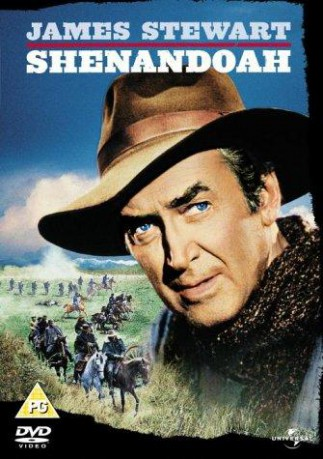

#3376 Der Mann vom großen Fluß
Alternativ: Shenandoah
Auszeichnungen: für 1 Oscars nominiert
 
 IMDB-Wertung: 7.4 / 10
IMDB-Wertung: 7.4 / 10  Metascore: 0
Metascore: 0 
In Shenandoah, Virginia, widower farmer Charlie Anderson lives a peaceful life with his six sons - Jacob, James, Nathan, John, Henry and Boy, his daughter Jennie, and his daughter-in-law and James' wife Ann Anderson. Charlie does not let his sons join the army to fight in the Civil War that he does not consider their war. Jennie marries her beloved Lieutenant Sam, but they do not have a honeymoon since Sam has to return to the front. Charlie's youngest son Boy is mistakenly taken prisoner by soldiers from the North so Charlie rides with his sons to rescue Boy, while James and Ann stay on the farm. It is time of violence and war, and tragedy reaches the Anderson family.
Jahr: 1965
Dauer: 100 Minuten
FSK: 12
Land: USA Studio: A Universal PictureTonspuren: DD2.0 - ,
Untertitel:
Auflösung: 720p (1280x694) Größe: 3164 MB
Genre: Drama, Krieg, Western
Regisseur: Andrew V. McLaglen
Drehbuch: James Lee Barrett
Soundtrack: Frank Skinner
Darsteller:
 James Stewart als Charlie
James Stewart als Charlie- Doug McClure als Sam
- Glenn Corbett als Jacob
 Patrick Wayne als James
Patrick Wayne als James Rosemary Forsyth als Jennie
Rosemary Forsyth als Jennie- Phillip Alford als Boy
 Katharine Ross als Ann
Katharine Ross als Ann- Jim McMullan als John
 Paul Fix als Dr. Tom Witherspoon
Paul Fix als Dr. Tom Witherspoon Denver Pyle als Pastor Bjoerling
Denver Pyle als Pastor Bjoerling George Kennedy als Col. Fairchild
George Kennedy als Col. Fairchild James Best als Carter, Rebel Soldier
James Best als Carter, Rebel Soldier Harry Carey Jr. als Jenkins, rebel soldier
Harry Carey Jr. als Jenkins, rebel soldier- Kevin Hagen als Mule, rebel deserter
 Dabbs Greer als Abernathy
Dabbs Greer als Abernathy Strother Martin als Train Engineer
Strother Martin als Train Engineer- Kelly Thordsen als Federal Purchasing Agent Carroll
- Lane Bradford als Tatum , uncredited
 Robert 'Buzz' Henry als Rider with Purchasing Agents , uncredited
Robert 'Buzz' Henry als Rider with Purchasing Agents , uncredited- Hoke Howell als Crying Prisoner , uncredited
- Beverly Randolph als Baby Martha Anderson , uncredited
 Bob Steele als Union Train Guard , uncredited
Bob Steele als Union Train Guard , uncredited- Kim Williams als Baby Martha Anderson , uncredited
 Charles Robinson als Nathan
Charles Robinson als Nathan- Tim McIntire als Henry
- Gene Jackson als Gabriel
- Tom Simcox als Lt. Johnson
- Berkeley Harris als Capt. Richards
- Rayford Barnes als Horace - Rebel Deserter , uncredited
- Jimmie Booth als Church Member , uncredited
- James Carter als Rider with Purchasing Agents , uncredited
- John Daheim als Federal Purchasing Agent Osborne , uncredited
- Gary Epper als Church Member , uncredited
 Edward Faulkner als Union Sergeant , uncredited
Edward Faulkner als Union Sergeant , uncredited Herman Hack als Church Member , uncredited
Herman Hack als Church Member , uncredited- James Heneghan Jr. als Young Picket on Road , uncredited
- Leroy Johnson als Rider with Purchasing Agents , uncredited
 Colin Kenny als Church Member , uncredited
Colin Kenny als Church Member , uncredited Mathew McCue als Man in Church , uncredited
Mathew McCue als Man in Church , uncredited- Pae Miller als Black Woman , uncredited
 Gregg Palmer als Guard , uncredited
Gregg Palmer als Guard , uncredited- Wayne Peters als Confederate Corporal , uncredited
 Max Wagner als Church Member , uncredited
Max Wagner als Church Member , uncredited- Peter Wayne als Confederate Corporal , uncredited
 Henry Wills als Rider with Purchasing Agents , uncredited
Henry Wills als Rider with Purchasing Agents , uncredited- Joe Yrigoyen als Federal Purchasing Agent Marshall , uncredited
Datei: X:\HD-Western-1960-1979\Mann vom großen Fluß, Der (1965, FSK12, 1280x694).mkv seit 29.03.2016
Festplatte: HD Eastern+Western
 Es gibt insgesamt 110 Filme in der Gruppe 'HD-Western-1960-1979'
Es gibt insgesamt 110 Filme in der Gruppe 'HD-Western-1960-1979'